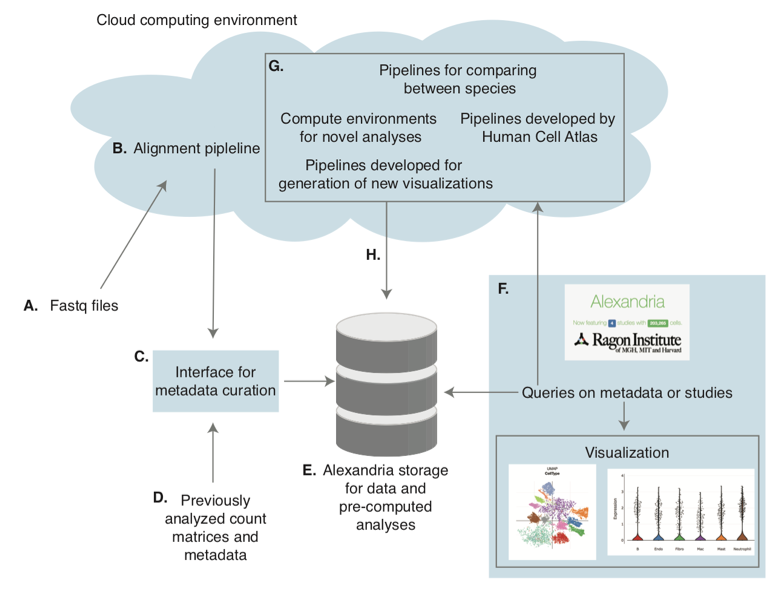

The Alexandria Project¶
A Single-Cell RNA-Seq and Analytics Platform for Global Health

This is the work-in-progress documentation for the Alexandria platform and all associated tool workflows and notebooks.
Background¶
Alexandria is a single-cell portal and data resource for the global health community. Alexandria will use unified pipelines to preprocess, store, and visualize datasets of interest to the global health community, enabling rapid realization of transformative insights and the prioritization of follow-ups. To maximize impact and utility, Alexandria will build upon existing efforts at the Broad, Single Cell Portal (SCP), but will be further enhanced to enable queries across gene sets, cell types, and models as inspired by the types of data collected by the global health community. This will power vital cross-comparisons while simultaneously providing novel analytic capabilities for the community at large. Moreover, Alexandra will similarly empower the broader global research community—from individuals with limited experience in single-cell analysis to power users looking to more rapidly isolate specific subsets of data from several experiments—to examine and parse scRNA-Seq data, so that the insights and intuitions of the entire scientific community can be leveraged to enable rapid progress in fighting a variety of human maladies.

Why use Alexandria?¶
There are a variety of features that Alexandria plans to provide users
The ability to cross project query on the cell level
Easy communication with collaborators: studies may be kept private during active analysis and shared only with desired groups.
Access to a variety of analysis pipelines and environments
Data upload¶
In Alexandria and the Single Cell Portal, data is organized into ‘studies’ which are projects containing data intended to be analyzed together. Visualizations of subsets of single cells are available within a study, and a study may contain data from many samples. An overview of visualizations provided on SCP can be found here.
Data can be uploaded to Alexandria while samples are still being collected, while the analysis is in progress, or when the final analysis is complete.
Types of studies:¶
Newly sequenced data: Raw sequencing data can be uploaded to Alexandria, aligned using integrated pipelines, and analyzed using either automated and interactive environments.
Currently, for automated visualization, all data must be uploaded and run on the alignment pipeline at the same time.
For human sequencing data, please verify that study is kept private for the time being.
The upload process for sequencing data is described here.
The process of sharing SCP studies is described here.
Partially analyzed data: For ongoing analyses or data collection, data can be uploaded using SCP file formats to allow sharing of intermediate results with collaborators.
Complete analyses: Data from published or under revision manuscripts may be uploaded.
We request that as much metadata as is known be added to the project even if it is the same for all cells in the project or is not relevant to the project.
These studies can be kept private and shared with reviewers when they are under revision.
The upload process for SCP file formats is described here.
The process of sharing SCP studies is described here.
Upload from Single Cell Portal file formats¶
SCP file format upload is documented here. The Alexandria Project has several additional requirements on these file types.
We will provide an interactive notebook to facilitate conversion of Seurat or Scanpy objects to these file types.
Expression files
These files should represent normalized (but not scaled) data whose values would make sense to visualize in violin plot or heatmaps. Currently, we expect UMI counts, if available, to be uploaded under ‘additional files’.
All genes, as opposed to only variable genes, should be included in these files, if possible.
Though not required, the Alexandria Project requests that each expression file contain the cells from one sample.
Each cell name must be unique across all samples.
Metadata file
To enable query, the Alexandria Project uses a structured metadata schema described here. This file should contain as many fields from that schema as possible including several required fields. They may also contain unstructured metadata fields provided their names differ from those used in the schema.
All cells must be included in a single file and the cell names must match those in the expression files.
Cluster files
These files represent dimensionality reduction visualizations and can contain subsets of cells (ex. Subclustering on a single cell type).
SCP allows these files to contain data labels which may be visualized only when that clustering is shown. These labels are not queryable, so Alexandria studies should only include labels that are not useful for query in these data labels.